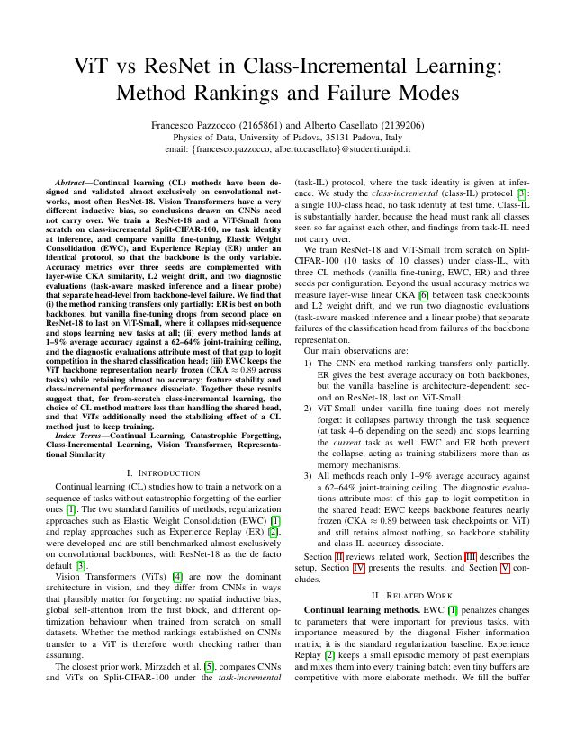
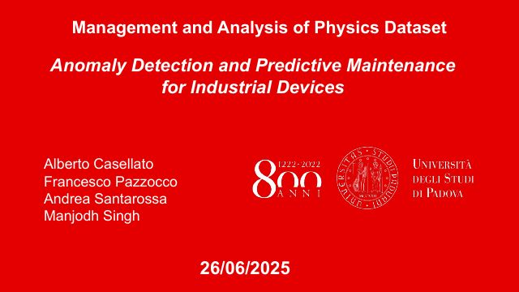
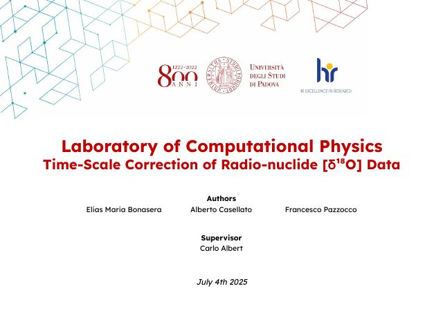

ViT vs ResNet in class-incremental continual learning
PyTorch · with A. Casellato
ResNet-18 and ViT-Small trained from scratch on Split-CIFAR-100 with fine-tuning, EWC and Experience
Replay; accuracy, CKA and weight-drift analysis of where forgetting happens.
RBM inference accelerator on FPGA
VHDL · Vivado · Arty A7-100T
784×128 RBM in Q8.8 fixed point with 16 parallel MAC units, a sigmoid look-up table and a UART
interface; self-checking testbenches, weights trained in PyTorch and uploaded over UART.

Matrix Product State classifiers
Python · qchaitea · QIC final project
Reproduction and stress test of Stoudenmire & Schwab (2016) on MNIST and CIFAR-10, with ablations
on site ordering, initialisation and sweep scheme.
Plankton community structure with RBMs
Python · unsupervised learning
Restricted Boltzmann Machine on five years (2019–2024) of high-frequency plankton monitoring data
from Lake Greifen.
Without any labels, the RBM recovered seven dominant community patterns.

Anomaly detection and predictive maintenance
Python · Dask · CloudVeneto · team of 4
Distributed analysis of 5 GB of industrial refrigeration sensor data on a Dask cluster: anomaly
scoring, load–temperature correlation, random-forest alarm prediction and scaling benchmarks.

Information content of ENCA summary statistics
Python · information theory · with A. Casellato
Mutual information between autoencoder-learned summaries, parameters and noise in a stochastic
double-well model.

Time-scale correction of δ18O data
R · Stan · team of 3
Bayesian inference of constant and time-dependent time-scale parameters on an ice-core
δ18O record, with an Ornstein–Uhlenbeck model for time intervals.
N-body simulation on GPU
C++ · CUDA
Direct-summation 3D Newtonian N-body code parallelised in CUDA.
Fake-news detection
R · Naive Bayes
Naive Bayes implementations for text classification compared on preprocessing and feature models,
with confidence intervals.